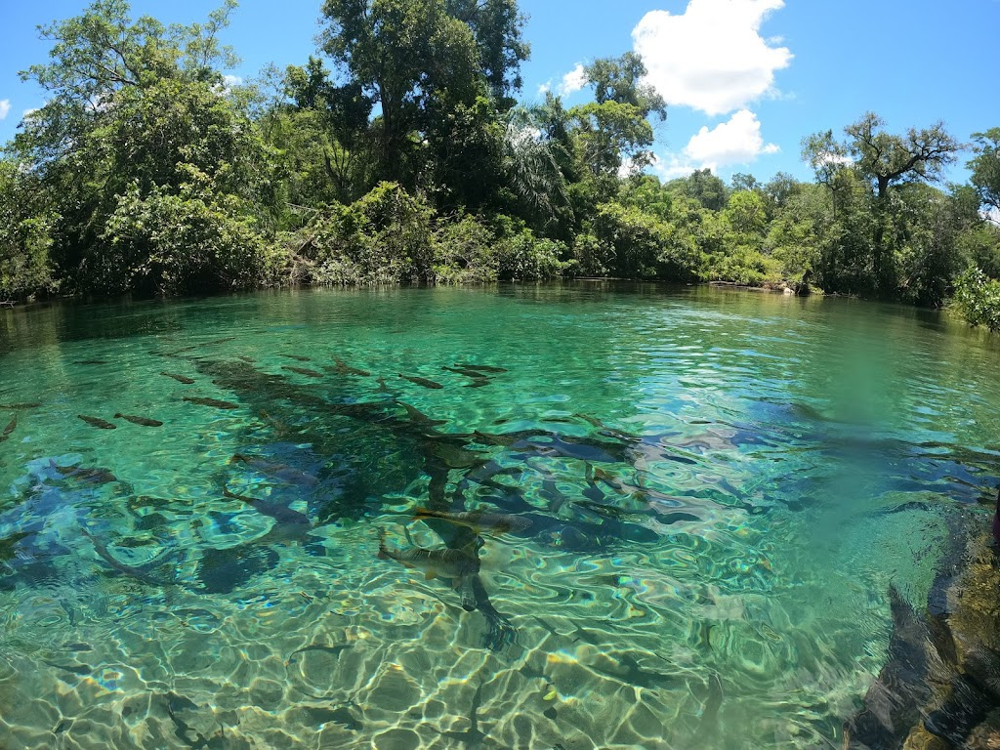

O estado de Mato Grosso do Sul (MS), localizado na região Centro-Oeste do Brasil, destaca-se por sua grande riqueza natural e cultural. Com paisagens que incluem o Pantanal — uma das maiores áreas alagadas do mundo — e regiões de Cerrado, o estado é conhecido pela biodiversidade e pelo ecoturismo, atraindo visitantes para destinos como Bonito, famoso por suas águas cristalinas e atividades de aventura. Sua capital, Campo Grande, é um importante centro administrativo e econômico, enquanto cidades como Dourados têm forte atuação no agronegócio. A economia sul-mato-grossense baseia-se principalmente na pecuária e na agricultura, com produção relevante de soja, milho e carne bovina. Além disso, o estado possui uma cultura rica, influenciada por tradições indígenas, paraguaias e sulistas, refletindo a diversidade de seu povo.

Voltar